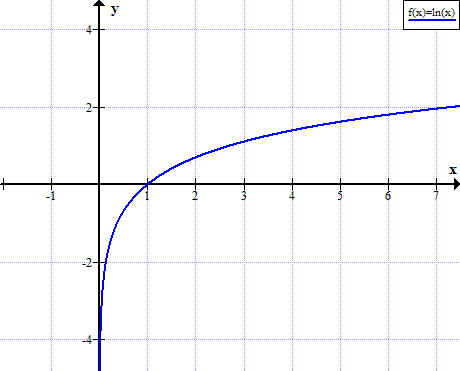

Natural Logarithm - ln(x)
Natural logarithm is the logarithm to the base e of a number.
- Natural logarithm (ln) definition
- Natural logarithm (ln) rules & properties
- Complex logarithm
- Graph of ln(x)
- Natural logarithms (ln) table
- Natural logarithm calculator
Definition of natural logarithm
When
e y = x
Then base e logarithm of x is
ln(x) = loge(x) = y
The e constant or Euler's number is:
e ≈ 2.71828183
Ln as inverse function of exponential function
The natural logarithm function ln(x) is the inverse function of the exponential function ex.
For x>0,
f (f -1(x)) = eln(x) = x
Or
f -1(f (x)) = ln(ex) = x
Natural logarithm rules and properties
| Rule name | Rule | Example |
|---|---|---|
Product rule |
ln(x ∙ y) = ln(x) + ln(y) |
ln(3 ∙ 7) = ln(3) + ln(7) |
Quotient rule |
ln(x / y) = ln(x) - ln(y) |
ln(3 / 7) = ln(3) - ln(7) |
Power rule |
ln(x y) = y ∙ ln(x) |
ln(28) = 8∙ ln(2) |
ln derivative |
f (x) = ln(x) ⇒ f ' (x) = 1 / x | |
ln integral |
∫ ln(x)dx = x ∙ (ln(x) - 1) + C | |
ln of negative number |
ln(x) is undefined when x ≤ 0 | |
ln of zero |
ln(0) is undefined | |
|
|
||
ln of one |
ln(1) = 0 | |
ln of infinity |
lim ln(x) = ∞ ,when x→∞ | |
| Euler's identity | ln(-1) = iπ |
Logarithm product rule
The logarithm of the multiplication of x and y is the sum of logarithm of x and logarithm of y.
logb(x ∙ y) = logb(x) + logb(y)
For example:
log10(3 ∙ 7) = log10(3) + log10(7)
Logarithm quotient rule
The logarithm of the division of x and y is the difference of logarithm of x and logarithm of y.
logb(x / y) = logb(x) - logb(y)
For example:
log10(3 / 7) = log10(3) - log10(7)
Logarithm power rule
The logarithm of x raised to the power of y is y times the logarithm of x.
logb(x y) = y ∙ logb(x)
For example:
log10(28) = 8∙ log10(2)
Derivative of natural logarithm
The derivative of the natural logarithm function is the reciprocal function.
When
f (x) = ln(x)
The derivative of f(x) is:
f ' (x) = 1 / x
Integral of natural logarithm
The integral of the natural logarithm function is given by:
When
f (x) = ln(x)
The integral of f(x) is:
∫ f (x)dx = ∫ ln(x)dx = x ∙ (ln(x) - 1) + C
Ln of 0
The natural logarithm of zero is undefined:
ln(0) is undefined
The limit near 0 of the natural logarithm of x, when x approaches zero, is minus infinity:

Ln of 1
The natural logarithm of one is zero:
ln(1) = 0
Ln of infinity
The limit of natural logarithm of infinity, when x approaches infinity is equal to infinity:
lim ln(x) = ∞, when x→∞
Complex logarithm
For complex number z:
z = reiθ = x + iy
The complex logarithm will be (n = ...-2,-1,0,1,2,...):
Log z = ln(r) + i(θ+2nπ) = ln(√(x2+y2)) + i·arctan(y/x))
Graph of ln(x)
ln(x) is not defined for real non positive values of x:

Natural logarithms table
| x | ln x |
|---|---|
| 0 | undefined |
| 0+ | - ∞ |
| 0.0001 | -9.210340 |
| 0.001 | -6.907755 |
| 0.01 | -4.605170 |
| 0.1 | -2.302585 |
| 1 | 0 |
| 2 | 0.693147 |
| e ≈ 2.7183 | 1 |
| 3 | 1.098612 |
| 4 | 1.386294 |
| 5 | 1.609438 |
| 6 | 1.791759 |
| 7 | 1.945910 |
| 8 | 2.079442 |
| 9 | 2.197225 |
| 10 | 2.302585 |
| 20 | 2.995732 |
| 30 | 3.401197 |
| 40 | 3.688879 |
| 50 | 3.912023 |
| 60 | 4.094345 |
| 70 | 4.248495 |
| 80 | 4.382027 |
| 90 | 4.499810 |
| 100 | 4.605170 |
| 200 | 5.298317 |
| 300 | 5.703782 |
| 400 | 5.991465 |
| 500 | 6.214608 |
| 600 | 6.396930 |
| 700 | 6.551080 |
| 800 | 6.684612 |
| 900 | 6.802395 |
| 1000 | 6.907755 |
| 10000 | 9.210340 |
See also
- Logarithm (log)
- Natural logarithm calculator
- Natural logarithm of zero
- Natural logarithm of one
- Natural logarithm of e
- Natural logarithm of infinity
- Natural logarithm of negative number
- Ln inverse function
- ln(x) graph
- Natural logarithm table
- Logarithm calculator
- e constant